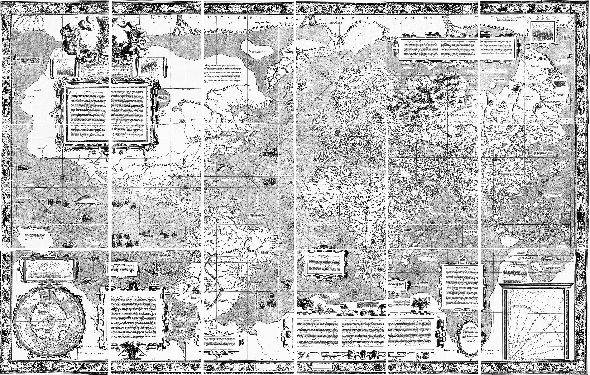
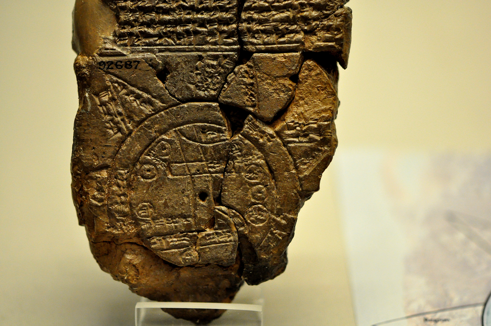
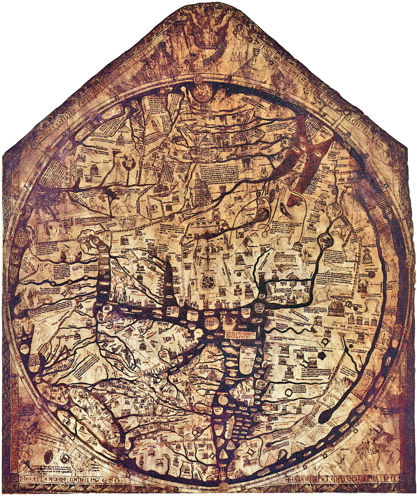
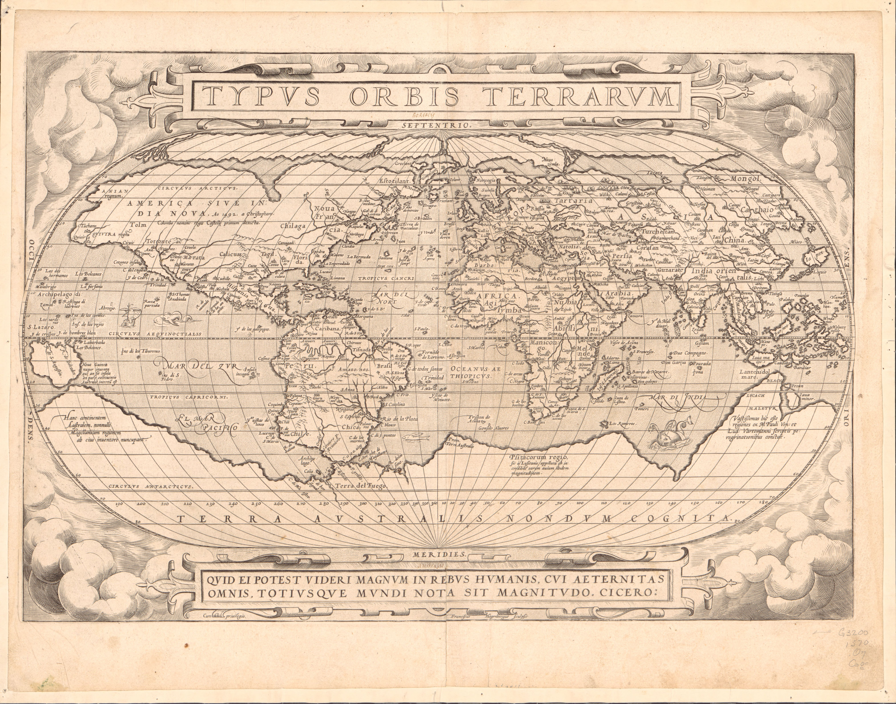

Cómo la humanidad dibujó, imaginó y descubrió
el mundo antes de la cartografía moderna.
Un viaje por los mapas del pasado
1. ¿Qué es un mapa antiguo?
Es una representación del territorio elaborada
con los conocimientos, instrumentos y creencias
de una época. No todos buscaban mostrar el mundo
con exactitud.
Registraban rutas, ciudades, ríos y fronteras.
Combinaban observaciones reales con relatos y mitos.
Hoy son fuentes para estudiar la historia y la cultura.

2. Los primeros mapas
Mucho antes de los satélites, distintas
civilizaciones dibujaron su entorno en
tablillas, papiros y pergaminos.
En Mesopotamia se elaboraron mapas sobre tablillas de arcilla.
En Egipto se representaron terrenos y zonas mineras.
En Grecia se desarrollaron ideas sobre la forma de la Tierra.

3. El mundo medieval
Durante la Edad Media, muchos mapas europeos
organizaban el mundo según ideas religiosas
y simbólicas. Algunos colocaban Jerusalén
en el centro.
Los mapas llamados T en O dividían el mundo en tres continentes.
Asia, Europa y África aparecían rodeadas por un océano.
Su valor era cultural, religioso y geográfico.

4. La era de los grandes viajes
Desde el siglo XV, los viajes marítimos
ampliaron los conocimientos geográficos.
Los navegantes necesitaban cartas más útiles
para seguir costas y calcular rumbos.
La brújula ayudaba a mantener una dirección.
Las cartas portulanas mostraban costas y puertos.
Los viajes transoceánicos transformaron la cartografía.
5. Mapas que cambiaron la historia
La cartografía avanzó gracias a nuevas mediciones,
instrumentos y métodos de impresión.
Gerardus Mercator (1569): publicó una proyección útil para la navegación.
Abraham Ortelius (1570): publicó uno de los primeros atlas modernos.
Las mediciones se hicieron más precisas y sistemáticas.
6. ¿Eran realmente exactos?
No siempre. Un mapa antiguo podía contener
errores de escala, distancias o formas.
También podía incluir lugares imaginarios.
La información dependía de relatos de viajeros.
Las técnicas de medición eran limitadas.
Los mapas muestran qué se sabía y qué se creía.

7. Del pergamino al satélite
Hoy utilizamos satélites, fotografías aéreas,
GPS y sistemas digitales para representar
la superficie terrestre.
Antes: observación directa, brújulas y relatos.
Ahora: imágenes satelitales y coordenadas.
Los mapas siguen ayudándonos a comprender el mundo.
Conclusión
Los mapas antiguos no son simples dibujos
del pasado. Son testimonios de la curiosidad
humana, de los viajes y de las ideas que
guiaron a distintas sociedades.
Al observarlos, no solo descubrimos cómo
representaban la Tierra: descubrimos
cómo imaginaban el mundo.